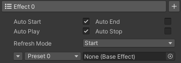

Effect
Parameter
Auto StartStarts automatically when the effect is updated or refreshed in the stop state.
Auto PlayPlays automatically when the effect is in the start state.
Auto EndEnds automatically when the effect is completed to play in the play state.
Auto StopStops automatically when the effect is in the end state.
-
Refresh modeRefresh mode determines the state of the effect after refreshed.
StartThe effect restarts after refreshed.
ReplayThe effect replays after refreshed.
PauseThe effect pauses after refreshed.
ContinueThe effect continues after refreshed.
EndThe effect ends after refreshed.
Execution
State
StopThe effect is not executed.
StartThe effect is executed at the time of 0.
PlayThe effect is executed at the effect time.
PauseThe effect is executed at the effect time.
EndThe effect is executed at the time of positive infinity.
Interval
The interval determines the actual execution time of the tag range in the effect. It includes the start interval and the range interval.
start intervalThe waiting time before executing the tag range. The start interval of the tag range is the start interval of the first preset in the tag range.
range intervalThe waiting time of the tag range. The range interval of the tag range is the range interval of the first preset in the tag range.
The start interval of the preset can be modified in the preset. The range interval of the preset can be modified in the preset script. (Default range interval = unit count * unit interval.)
The execution time of the tag range is the sum of the start intervals and the range intervals of all previous tag ranges in the same effect, plus the start interval of the current tag range.
Example: <AT>Ani</AT><AT>mat</AT><AT>ext</AT>
The execution time of "Ani" is the start interval of "Ani".
The execution time of "mat" is the sum of the start interval of "Ani", the range interval of "Ani" and the start interval of "mat".
The execution time of "ext" is the sum of the start interval of "Ani", the range interval of "Ani", the start interval of "mat", the range interval of "mat" and the start interval of "ext".